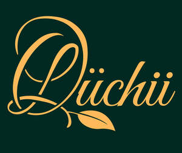
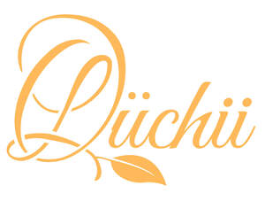

Trade Mark Journal No.2025/041 10 October 2025
UK00004269062 25 September 2025 (30,35)
Mark 1

Mark 2

- Class 30
- Chocolate confectionary; Chocolate confections; Chocolate confectionery; Truffles [confectionery]; Chocolate truffles; Chocolate; Liqueur chocolates; Truffles (rum -) [confectionery]; Chocolate confectionery containing pralines; Chocolates; Chocolate flavoured confectionery; Chocolate marzipan; Chocolate pastries; Chocolate desserts; Chocolate candies; Chocolate confectionery products; Confectionery chocolate products; Chocolate sweets; Chocolate fillings for bakery products; Chocolate confectionery having a praline flavour; Chocolate fondue; Pralines made of chocolate; Pralines; Non-medicated chocolate confectionery; Chocolate fudge; Dairy chocolate; Chocolate for confectionery and bread; Fondants [confectionery]; Confectionery; Marshmallow confectionery; Chocolate syrups; Dairy-free chocolate; Chocolate flavourings; Mousses (Chocolate -); Chocolate mousses; Chocolate sauces; Mousse confections; Caramels [sweets]; Chocolates in the form of pralines; Caramels; Chocolate coffee; Chocolate-coated sugar confectionery; Chocolate brownies; Mallows [confectionery]; Liquorice [confectionery]; Macaroons [pastry]; Chocolate cakes; Chocolate caramel wafers; Peppermint for confectionery; Chocolate creams; Chocolate candy with fillings; Dairy confectionery; Sweets (Non-medicated -) in the nature of chocolate eclairs; Chocolate biscuits; Almond confectionery; Chocolate for toppings; Creme caramels; Chocolate bunnies; Chocolate waffles; Chocolate cake; Cocoa-based ingredients for confectionery products; Chocolate syrups for the preparation of chocolate based beverages; Imitation chocolate; Candy with cocoa; Chocolate wafers; Shortbread with a chocolate coating; Pastilles [confectionery]; Chocolate bars; Vegan hot chocolate; Chocolate decorations for confectionery items; Mint for confectionery; Lollipops [confectionery]; Chocolate beverages; Confectionery items formed from chocolate; Liquorice flavoured confectionery; Cocoa nibs ; Shortbread with a chocolate flavoured coating; Marshmallow filled chocolates; Confectionery bars; Bonbons; Chocolate syrup; Milk chocolate teacakes; Macarons; Peanut confectionery; Chocolates with mint flavoured centres; Cocoa; Confectionery items coated with chocolate; Prepared desserts [chocolate based]; Nut confectionery; Chocolate vermicelli; Zefir [confectionery]; Chocolate based fillings; Milk chocolates; Ice confections; Aerated chocolate; Chocolate flavoured coatings; Chocolate eggs; Sugar confectionery; Non-medicated confectionery containing chocolate; Chocolate sauce; Pastry; Milk chocolate; Chocolate pastes; Chocolate flavoured beverages; Tablet (confectionary); Ice confectionery; Chocolate coating; Sherbet [confectionery]; Chocolate topping; Chocolate based products; Flour confectionery; Prepared desserts [confectionery]; Filled chocolate; Chocolate extracts; Chocolate decorations for cakes; Flavoured sugar confectionery; Non-medicated chocolate; Drinking chocolate; Viennese pastries; Chocolate coated nougat bars; Non-medicated flour confectionery coated with chocolate; Non-medicated flour confectionery containing chocolate; Chocolate chips; Gluten-free bakery products; Eclairs; Viennoiserie; Confectionery ices; Chocolate based drinks; Aerated beverages [with coffee, cocoa or chocolate base]; Drinks flavoured with chocolate; Ice creams flavoured with chocolate; Milk chocolate bars; Prepared cocoa and cocoa-based beverages; Stick liquorice [confectionery]; Fruit confectionery; Non-medicated flour confectionery coated with imitation chocolate; Chocolate drink preparations flavoured with toffee.
- Class 35
- Retail services in relation to chocolate.
Valerie Alexander